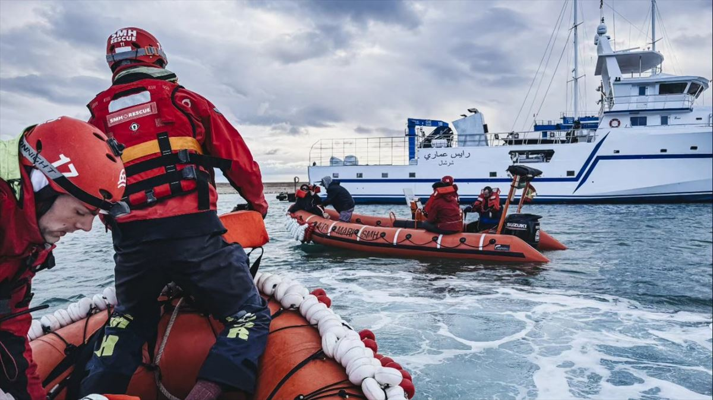
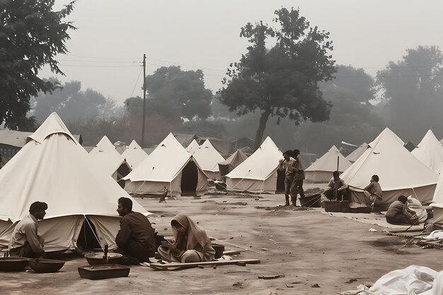
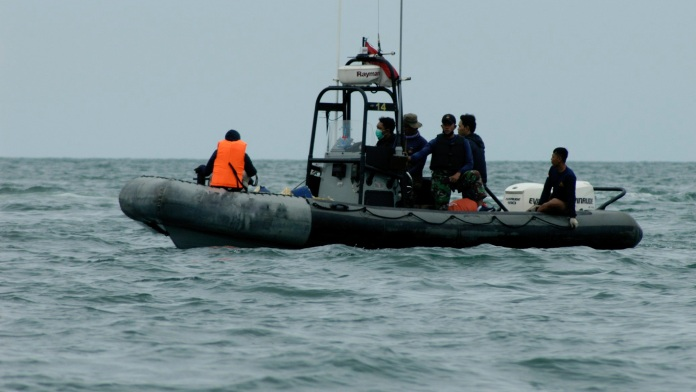

Salvamento Marítimo cuenta con un amplio despliegue de medios a lo
largo de todas las costas españolas, tanto humanos como materiales, que
incluyen medios marítimos y aéreos, además de los centros desde donde se
coordinan las operaciones, bases estratégicas de almacenamiento y
gestión y un centro de formación.
Estas dotaciones, con los medios más modernos destinados a la seguridad
marítima, se mantienen y renuevan para mantener en máximos la calidad de
nuestro servicio gracias a la profesionalidad de nuestras mujeres y
hombres.

Educación para la transformación social

Proyecto Manta (Ecuador)

Campamento de personas refugiadas en Grecia:
Miles de personas se encuentran varadas a las puertas de Europa sin
asistencia mínima básica debido al racismo institucional al que se ven
sometidas.

Barco de rescate ‘Aita Mari’:
Cada vida que le arrebatamos a la mayor fosa común del planeta, importa.
Nadie debería morir en el mar.